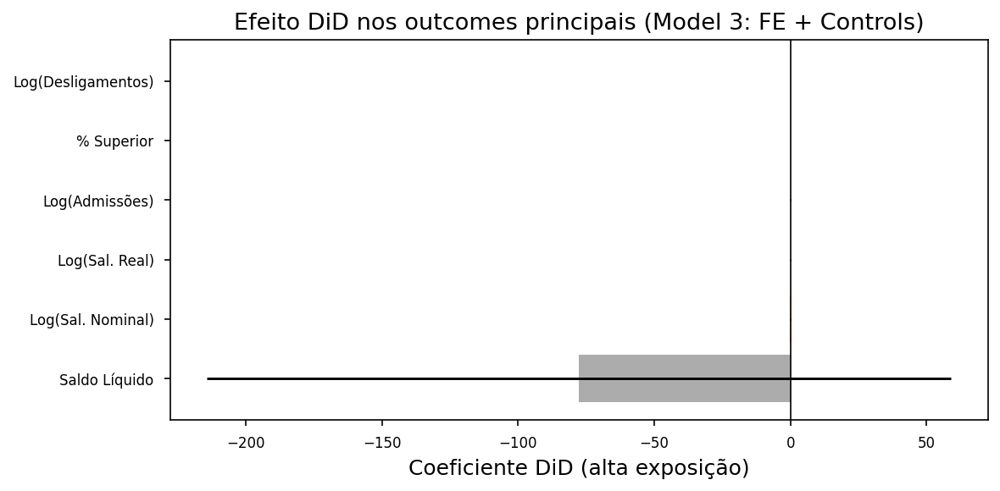
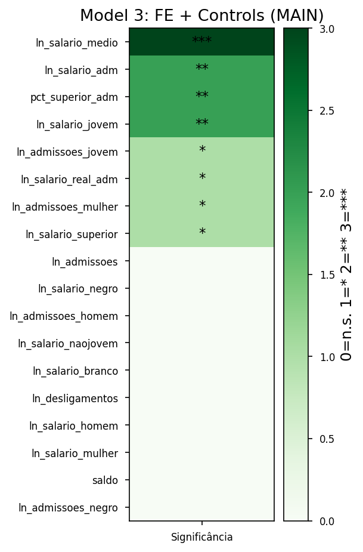

ETAPA 2c — Resultados: Consolidação e Síntese da Análise DiD
Dissertação: Inteligência Artificial Generativa e o Mercado de Trabalho Brasileiro: Uma Análise de Exposição Ocupacional e seus Efeitos Distributivos.
Aluno: Manoel Brasil Orlandi
0.1 Objetivo deste notebook
Organizar as tabelas e figuras geradas no Notebook 2b (Análise DiD) para leitura com a orientadora. Inclui: listagem e exibição de todos os resultados e tabelas em outputs/tables e outputs/figures, gráficos adicionais para ilustrar os achados, resumo narrativo e uma tabela-síntese de achados com relevância estatística (//) e destaque em cores para os achados mais relevantes.
Input: Arquivos gerados pelo notebook etapa_2b_analise_did_caged_ilo.ipynb (pastas outputs/tables e outputs/figures).
0.2 1. Configuração do ambiente
Importar bibliotecas, definir caminhos e estilo de gráficos. Caminhos relativos ao diretório notebook/.
# Verificar dependências e instalar apenas o que faltar (rode esta célula primeiro)import importlib.utilimport subprocessimport sysPACOTES = [ ("pandas", "pandas"), ("numpy", "numpy"), ("matplotlib", "matplotlib"), ("seaborn", "seaborn"),]def ja_instalado(nome_import):return importlib.util.find_spec(nome_import) isnotNonefaltando = [pip for imp, pip in PACOTES ifnot ja_instalado(imp)]if faltando: subprocess.check_call([sys.executable, "-m", "pip", "install", "-q"] + faltando)print("Instalado:", ", ".join(faltando))else:print("Todas as dependências já estão instaladas.")
As tabelas abaixo foram salvas em outputs/tables pelo notebook etapa_2b. Exibimos cada uma para leitura.
0.3.1 2.1 Balanceamento pré-tratamento
Médias das variáveis no período pré-tratamento: grupo de controle (baixa exposição) vs. grupo de tratamento (alta exposição). Diff. Normalizada e indicador de balanceamento (✓ ou ⚠️).
path = OUTPUTS_TABLES /"balance_table_pre.csv"if path.exists(): df = pd.read_csv(path) display(df)else:print("Arquivo não encontrado:", path, "- Execute o notebook etapa_2b para gerar as tabelas.")
Variável
Controle
Tratamento
Diff. Normalizada
Balanceado
0
Admissões (média)
2655.3378
3409.8367
0.0601
✓
1
Desligamentos (média)
2321.3264
2916.9194
0.0552
✓
2
Saldo (média)
334.0114
492.9173
0.0865
✓
3
Salário médio (R$)
2738.7651
5388.2059
0.6846
⚠️
4
Idade média
32.7528
31.7992
-0.1723
✓
5
% Mulheres
0.2789
0.4414
0.6965
⚠️
6
% Superior
0.1557
0.4189
1.1501
⚠️
7
Meses
22.5706
21.8550
-0.2187
✓
0.3.2 2.2 Resultados principais DiD
Coeficiente do tratamento (alta exposição à IA) para cada modelo (1: Basic, 2: FE, 3: FE + Controls — principal, 4–6: contínuo e 4d) e outcome. Erros padrão clusterizados por ocupação (CBO 4d). Coluna stars: *** p<0.01, ** p<0.05, * p<0.10.
Efeito DiD sob: cutoff alternativo (top 10%, 25%, mediana), placebo (tratamento em 12/2021), exclusão de ocupações de TI, tendências diferenciais (pré) e crosswalk 4d.
Para cada outcome: número de coeficientes pré-tratamento no event study, quantos significativos (p<0.05), p-valor do teste conjunto (pré = 0) e status (PARALELAS ou PREOCUPAÇÃO).
Efeito principal e interação (tratamento × grupo: jovem, feminino, superior, negro) para cada outcome. interaction_pval indica se o efeito difere entre grupos.
0.3.7 2.7 Event study (coeficientes por período relativo)
Coeficientes do evento (mês relativo ao lançamento do ChatGPT, t = -1 é referência). Abaixo: outcomes principais. Arquivos completos em outputs/tables/event_study_*.csv.
event_study_files =sorted(OUTPUTS_TABLES.glob("event_study_*.csv"))print("Arquivos event study disponíveis:", [f.name for f in event_study_files])# Exibir resumo para outcomes principaisprincipais = ["ln_admissoes", "ln_desligamentos", "saldo", "ln_salario_adm", "ln_salario_real_adm", "ln_salario_jovem"]for out in principais: path = OUTPUTS_TABLES /f"event_study_{out}.csv"if path.exists(): df_es = pd.read_csv(path)print(f"\n--- Event study: {out} ---") display(df_es.head(15))
Figuras salvas em outputs/figures pelo notebook etapa_2b (tendências paralelas, event study agregado, scatter exposição vs coeficiente). Se a pasta estiver vazia, execute o notebook etapa_2b para gerá-las.
figuras =sorted(OUTPUTS_FIGURES.glob("*.png")) +sorted(OUTPUTS_FIGURES.glob("*.pdf"))ifnot figuras:print("Nenhuma figura encontrada em", OUTPUTS_FIGURES)print("Execute o notebook etapa_2b_analise_did_caged_ilo.ipynb para gerar as figuras.")else:for path in figuras:print("---", path.name, "---")if path.suffix.lower() ==".png": display(Image(filename=str(path)))else:print("(PDF: abra manualmente ou use outro viewer)")
--- event_study_all_outcomes.png ---
--- parallel_trends_all_outcomes.png ---
--- scatter_automation_index_vs_did_coef.png ---
0.5 4. Gráficos para ilustrar os achados
Gráficos construídos neste notebook a partir das tabelas do etapa_2b: efeito DiD nos outcomes principais (Model 3) e dinâmica do event study para um outcome emblemático.
0.5.1 4.1 Efeito DiD (alta exposição à IA) nos outcomes principais
Coeficiente do tratamento para o modelo principal (Model 3: FE + Controls). Barras: intervalo de confiança 95%. Cores: verde = p<0.01, laranja = p<0.05, cinza = não significativo.
path = OUTPUTS_TABLES /"did_main_results.csv"ifnot path.exists():print("Arquivo não encontrado. Execute o etapa_2b.")else: df = pd.read_csv(path) main = df[df["model"] =="Model 3: FE + Controls (MAIN)"].copy() outcomes_principais = ["ln_admissoes", "ln_desligamentos", "saldo", "ln_salario_adm", "ln_salario_real_adm", "pct_superior_adm"] main = main[main["outcome"].isin(outcomes_principais)] labels = {"ln_admissoes": "Log(Admissões)", "ln_desligamentos": "Log(Desligamentos)", "saldo": "Saldo Líquido","ln_salario_adm": "Log(Sal. Nominal)", "ln_salario_real_adm": "Log(Sal. Real)", "pct_superior_adm": "% Superior" } main["label"] = main["outcome"].map(labels) main["ci_lo"] = main["coef"] -1.96* main["se"] main["ci_hi"] = main["coef"] +1.96* main["se"] main["cor"] = main["p_value"].apply(lambda p: "#2e7d32"if p <0.01else"#ef6c00"if p <0.05else"#9e9e9e") main = main.sort_values("coef", ascending=True) fig, ax = plt.subplots(figsize=(8, 4)) y_pos =range(len(main)) ax.barh(y_pos, main["coef"], color=main["cor"], alpha=0.85) ax.errorbar(main["coef"], y_pos, xerr=1.96* main["se"], fmt="none", color="black", capsize=3) ax.axvline(0, color="black", linewidth=0.8) ax.set_yticks(y_pos) ax.set_yticklabels(main["label"]) ax.set_xlabel("Coeficiente DiD (alta exposição)") ax.set_title("Efeito DiD nos outcomes principais (Model 3: FE + Controls)") plt.tight_layout() plt.show()

0.5.2 4.2 Dinâmica do efeito: Event study (salário real de admissão)
Coeficientes por mês relativo ao lançamento do ChatGPT (t = -1 é referência). Banda: IC 95%. Permite verificar tendências pré e evolução pós-tratamento.
0.5.3 4.3 Tabela visual de significância (outcomes principais × modelo principal)
Heatmap: célula escura = significativo (//), clara = não significativo. Facilita ver onde os efeitos são robustos.
path = OUTPUTS_TABLES /"did_main_results.csv"if path.exists(): df = pd.read_csv(path) main3 = df[df["model"] =="Model 3: FE + Controls (MAIN)"].copy() main3["sig"] = main3["p_value"].apply(lambda p: 3if p <0.01else2if p <0.05else1if p <0.10else0) pivot = main3.set_index("outcome")["sig"].to_frame("estrelas") pivot = pivot.sort_values("estrelas", ascending=False) fig, ax = plt.subplots(figsize=(4, max(5, len(pivot) *0.35))) cmap = plt.cm.Greens im = ax.imshow(pivot.values, cmap=cmap, vmin=0, vmax=3, aspect="auto") ax.set_yticks(range(len(pivot))) ax.set_yticklabels(pivot.index) ax.set_xticks([0]) ax.set_xticklabels(["Significância"])for i inrange(len(pivot)): ax.text(0, i, "***"if pivot.iloc[i, 0] ==3else"**"if pivot.iloc[i, 0] ==2else"*"if pivot.iloc[i, 0] ==1else"", ha="center", va="center") plt.colorbar(im, ax=ax, label="0=n.s. 1=* 2=** 3=***") ax.set_title("Model 3: FE + Controls (MAIN)") plt.tight_layout() plt.show()else:print("Arquivo não encontrado.")

0.6 5. Resumo dos achados
Tendências paralelas: O teste de tendências paralelas (coeficientes pré-tratamento do event study) indica que a maioria dos outcomes apresenta tendências paralelas entre grupos de alta e baixa exposição no período pré-ChatGPT. Há sinal de preocupação em Log(Desligamentos) e Log(Salário Mulheres) (p-valor conjunto pré baixo ou coeficientes pré significativos), o que deve ser considerado na interpretação.
Efeitos principais (Model 3: FE + Controls): Após o lançamento do ChatGPT, ocupações com alta exposição à IA apresentam, em média: (i) redução no salário de admissão nominal (coef. negativo, ); (ii) redução no salário real de admissão** (); (iii) aumento na proporção de admissões com ensino superior (); (iv) redução no salário de admissão dos jovens () e redução no salário médio (). Não há efeito estatisticamente significativo em admissões ou desligamentos em nível; o saldo líquido é negativo em algumas especificações (ex. contínuo 4d) com * ou .
Robustez: Os resultados de salário permanecem ao usar cutoff alternativo (top 10%, 25%), placebo em 12/2021 (não significativo), exclusão de ocupações de TI (efeito em salário nominal **) e crosswalk 4d. O teste de tendências diferenciais (pré) não rejeita a hipótese de paralelismo.
Heterogeneidade: A interação tratamento × jovem é forte para salários (salário nominal, real, jovem, não-jovem, negro, salário médio) e para % superior, sugerindo que jovens em ocupações de alta exposição sofrem mais o efeito negativo nos salários. Há heterogeneidade por gênero (salário jovem) e por raça (salário negro).
Em conjunto, os achados sugerem que a difusão da IA generativa está associada a piora nos salários de admissão em ocupações mais expostas, em especial para jovens e para cargos de escolaridade média, com aumento da share de admissões com ensino superior nessas ocupações — compatível com substituição de tarefas ou mudança na composição da demanda.
0.7 6. Tabela-síntese de achados e relevância estatística
Tabela única com os principais achados: descrição, coeficiente, E.P., p-valor, significância (*** p<0.01, ** p<0.05, * p<0.10) e tipo (Principal, Robustez, Heterogeneidade). Cores: verde = achados mais relevantes (*** ou **); âmbar = * ou relevante; neutro = não significativo.
# Construir tabela-síntese a partir dos CSVsdef stars(p):if p isNoneor pd.isna(p): return""if p <0.01: return"***"if p <0.05: return"**"if p <0.10: return"*"return""rows = []# Model 3 principalpath_main = OUTPUTS_TABLES /"did_main_results.csv"if path_main.exists(): df_main = pd.read_csv(path_main) m3 = df_main[df_main["model"] =="Model 3: FE + Controls (MAIN)"] outcome_labels = {"ln_admissoes": "Log(Admissões)", "ln_desligamentos": "Log(Desligamentos)", "saldo": "Saldo Líquido","ln_salario_adm": "Log(Sal. Nominal)", "ln_salario_real_adm": "Log(Sal. Real)", "pct_superior_adm": "% Superior","ln_salario_jovem": "Log(Sal. Jovens)", "ln_salario_medio": "Log(Sal. Médio)", "ln_salario_superior": "Log(Sal. Superior)","ln_salario_mulher": "Log(Sal. Mulheres)", "ln_salario_naojovem": "Log(Sal. Não-Jovens)", "ln_admissoes_mulher": "Log(Adm. Mulheres)","ln_admissoes_jovem": "Log(Adm. Jovens)" }for _, r in m3.iterrows(): out = r["outcome"] label = outcome_labels.get(out, out) s = stars(r["p_value"]) rows.append({"Achado": f"Efeito DiD (alta exp.) em {label}","Outcome": label,"Coeficiente": round(r["coef"], 4),"E.P.": round(r["se"], 4),"p-valor": round(r["p_value"], 4),"Sig.": s if s else"—","Tipo": "Principal" })# Robustez (linhas selecionadas: Top 20% e Placebo e Excl. TI)path_rob = OUTPUTS_TABLES /"robustness_results.csv"if path_rob.exists(): df_rob = pd.read_csv(path_rob)for spec in ["Top 20% (MAIN)", "Placebo (12/2021)", "Sem ocupações TI", "Score 4d (fallback hierárquico 6 níveis)"]: sub = df_rob[df_rob["specification"] == spec]for _, r in sub.iterrows(): s = stars(r["p_value"]) rows.append({"Achado": f"Robustez: {spec} — {r['outcome']}","Outcome": r["outcome"],"Coeficiente": round(r["coef"], 4),"E.P.": round(r["se"], 4),"p-valor": round(r["p_value"], 4),"Sig.": s if s else"—","Tipo": "Robustez" })sintese = pd.DataFrame(rows)if sintese.empty:print("Nenhum dado encontrado. Execute o etapa_2b.")else:# Relevância para cor: 2 = mais relevante (***/**), 1 = * ou robustez relevante, 0 = não sig. sintese.to_csv(OUTPUTS_TABLES /"sintese_achados_etapa2c.csv", index=False)# Estilo: verde para ***/**, âmbar para *, neutro para não sig.def highlight_relevancia(row): p = row["p-valor"] r =2if p <0.05else (1if p <0.10else0)if r ==2: return ["background-color: #c8e6c9"] *len(row)if r ==1: return ["background-color: #fff9c4"] *len(row)return [""] *len(row) styled = sintese.style.apply(highlight_relevancia, axis=1).set_caption("Síntese dos achados (verde = ***/**, âmbar = *)") display(styled)
Todos os inputs deste notebook (tabelas em outputs/tables e figuras em outputs/figures) são gerados pelo notebook etapa_2b_analise_did_caged_ilo.ipynb. Para reproduzir os resultados do zero, execute primeiro o etapa_2a_preparacao_dados_did_caged_ilo.ipynb (preparação do painel) e em seguida o etapa_2b (análise DiD). Depois, execute este notebook (etapa_2c) para consolidar e visualizar os achados.